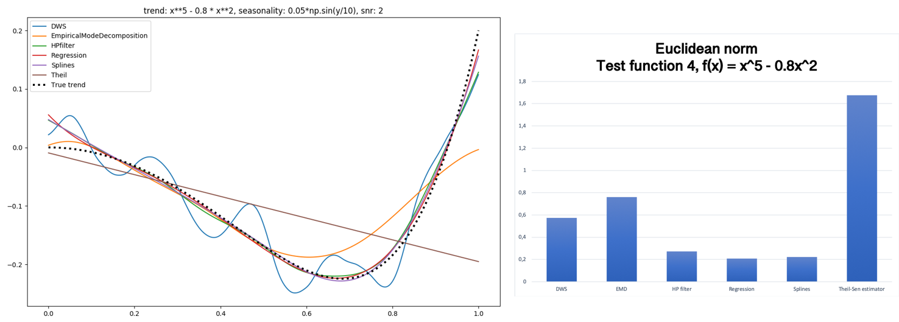

Trend Identification and Estimation in Time-Series Data
Student(s): Grillo, A., Hanrieder, M., Mauranen, H., Mikos, M., Wiezorek, J.
Supervisor(s): Bonizzi, P.
Semester: 2018-2019
Fig 1. - How a trend can affect the interpretation
Background
This project should help to analyse time series data, which is a special type of data with a time-value, such as seconds or timestamp, as x-value and any observed value as y-value.
For example the y-value can be a measured value like temperature or e.g. stock exchange data.
In a mathematical sense, data has several components.
One component is the so-called noise, which describes, among other, random events or measurement errors.
Another component is the Season component, for example for weather data, the different season, so in general the season component describe repetitive behaviour during the observation. Furthermore,
data can contain a trend, which describe how the data will develop beyond the measuring period.
In Fig. 1 a synthetic time series data was generated with these three different components, a trend, random noise and seasonality.
A main topic of this project is to identify trends, this identification can be split in two parts.
The first part is the identification, which means to find out if a trend exists in the data, while the second part is to estimate this trend.
An estimation of a trend can be an equation like x+5 or just a list of points, this depends on the method that is used.
Trends can have different shapes such as just a straight line that goes up or down or more complex curves like simple polynomials.
An overview about the considered types of trend can be found in Fig 2.
In this context of trend, different types of trends exist
Different methods can either identify or estimate a trend or do both.
Problem statement and motivation:
after removal a better view e.g. on season
so because influence the analysis
different fields with very specific solutions
ecg as an 'real world' example
no automatisation
Methods
A lot of methods are able to detect or approximate a trend, but these methods perform differently depending on the trend, the influence of the seasonal component and the noise.
The methods that are covered are mostly common methods, like regression, but some more complex methods are covered as well.
An overview and a brief description can be found in the report.
To be able to generalise the analysis of a trend all considered methods are applied to different types of trend and the results are analysed.
In Fig ? and Fig ? and example analysis is presented. The Theil-Sen estimator performs very bad on the first trend but it is much better on the second.
An example of this analysis can be found on Fig ? and Fig ?,

Fig 2. - Performance analysis on mixed polynomial trend
Fig 3. - Performance analysis on monotonic trend
Research questions/hypotheses:
What are the best and most versatile approaches for trend identification and estimation in time series data?
What are the strengths and weak points of the different methods tested?
Is it possible to automatically select the best approach(es) for trend identification and estimation, based on the (statistical/frequency/etc.) properties of a time series and the specific problem domain and application?
Main outcomes:
Comparisation of strengths and weeknesses of different methods for trend detection and estimation
References:
Kitano, H., Asada, M., Kuniyoshi, Y., Noda, I., & Osawa, E. (1997). Robocup: the robot world cup initiative. Proceedings of the first international conference on Autonomous agents, 340-347.